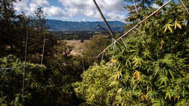

Times journalists around the world bring you a new 360 video every day.
Recent Episodes in
The Daily 360
-

The Daily 360 1:21
Why a Pot Farmer Opposes Legal Marijuana
-
The Daily 360 1:07
In the Media Pen at a Trump Rally
-
The Daily 360 1:24
‘Jungle’ on Fire: Migrant Camp Destroyed
-
The Daily 360 0:32
The Winning View From Chicago
-
The Daily 360 1:14
Candidate Selfies as the New Souvenir
-
The Daily 360 1:10
In the Rubble of an Airstrike in Yemen
-
The Daily 360 1:38
Introducing The Daily 360